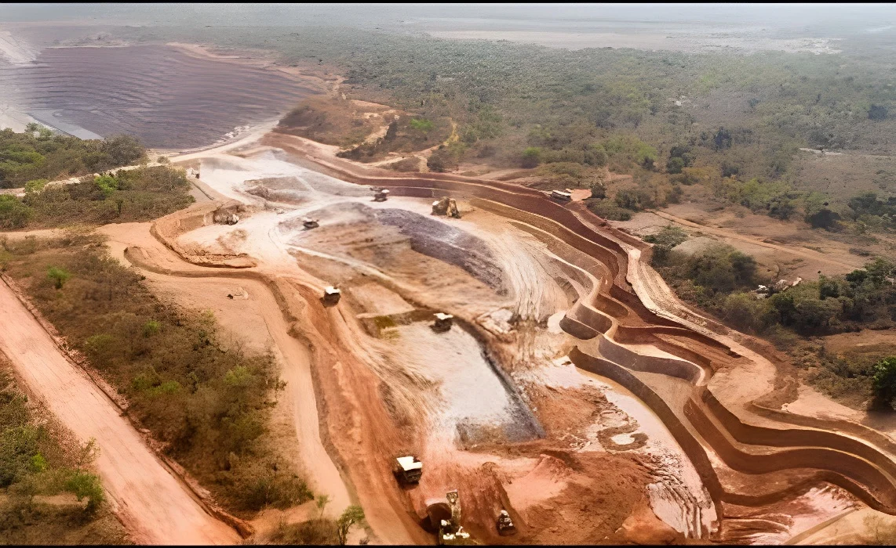

Le 8 octobre 2026, la société australienne Aurum Resources a présenté au Premier ministre ivoirien les résultats de deux années d'exploration à Boundiali et Kouto : des ressources estimées à environ 115 tonnes d'or, soit un gisement « de classe mondiale ». Il s'agit de ressources géologiques et non de réserves exploitables, la première estimation de réserves probables atteignant 37,6 tonnes. La construction de la mine est annoncée avant fin 2026 si les financements sont réunis, pour une production commerciale au premier semestre 2028.
Le jeudi 8 octobre 2026, les dirigeants de la société australienne Aurum Resources, menés par son président et directeur général Caigen Wang, ont présenté au Premier ministre ivoirien, Robert Beugré Mambé, les résultats de deux années d'exploration à Boundiali, dans le nord de la Côte d'Ivoire, à plus de 700 kilomètres d'Abidjan. Les ressources identifiées atteignent environ 115 tonnes d'or, un volume que les sources rangent parmi les gisements « de classe mondiale », catégorie qui commence, selon Afrik Soir, à environ 90 tonnes. Le projet s'étend sur les départements de Boundiali et de Kouto.
Le Premier ministre a souligné l'importance de la découverte pour le potentiel minier national, en disant que la Côte d'Ivoire comptait désormais quatre mines de classe mondiale, et a félicité l'initiative au nom du président Alassane Ouattara.
Il faut distinguer les ressources géologiques, quantités estimées dans le sol, des réserves exploitables, que l'on peut extraire de façon rentable. Les 115 tonnes sont des ressources. Les évaluations de la société sont plus modestes : en mars 2026, le projet comptait environ 3,03 millions d'onces d'or ; en mai, la ressource était évaluée à 3,22 millions d'onces, soit près de 100 tonnes ; et la première estimation de réserves probables, publiée en juin, s'établit à 1,21 million d'onces, soit environ 37,6 tonnes. Une once vaut 31,1 grammes : 115 tonnes équivalent à environ 3,7 millions d'onces.
| Estimation de Boundiali | Quantité |
|---|---|
| Annonce du 8 octobre (ressources) | ≈ 115 t |
| Ressources, mai 2026 | 3,22 Moz (≈ 100 t) |
| Ressources, mars 2026 | 3,03 Moz |
| Réserves probables, juin 2026 | 1,21 Moz (≈ 37,6 t) |
Le projet comprend quatre gisements exploitables à ciel ouvert, dont les ressources seraient extraites pendant environ onze ans. Aurum compte lancer la construction avant la fin de 2026, à condition de réunir les financements, estimés à plus de 200 milliards de francs CFA et pouvant atteindre 503 millions de dollars selon la source. La production commerciale est annoncée pour le premier semestre 2028. Les retombées attendues sont plus de 4 000 emplois, 18 milliards de francs CFA pour le comité de développement local minier et environ 865 milliards de recettes pour l'État sur la durée de vie de la mine.
Aurum, déjà soutenue par l'australien Perseus Mining, qui exploite les mines de Sissingué et de Yaouré en Côte d'Ivoire et prévoyait en mars de prendre jusqu'à 9,9 % de son capital, a levé environ 20 millions de dollars pour financer son étude de préfaisabilité et un programme de forage de 100 000 mètres.
Présentation des résultats au Premier ministre à Abidjan.
Première coulée d'or, 42 kilogrammes, de la mine de Koné (Montage Gold).
Première estimation de réserves probables à Boundiali : 1,21 million d'onces.
Ressource évaluée à 3,22 millions d'onces.
Aurum prévoit de lever 20 millions de dollars ; Perseus vise jusqu'à 9,9 % du capital.
Octroi du permis d'exploitation définitif du projet de Doropo.
Début de l'exploitation de la mine de Lafigué (Endeavour Mining).
La production d'or de la Côte d'Ivoire a plus que doublé en une décennie : de 12 tonnes en 2011 à 59,4 tonnes en 2025, avec 62 tonnes attendues en 2026. Elle place le pays au huitième rang africain, devant la Tanzanie (51 tonnes) et la République démocratique du Congo (42,4 tonnes). Le gouvernement vise 100 tonnes par an d'ici une dizaine d'années et affiche l'ambition de devenir le premier producteur d'or d'Afrique d'ici 2035, devant le Mali et le Burkina Faso. Dès mars 2025, les autorités visaient déjà d'égaler la production du Ghana d'ici 2030 et de devancer celle de ses deux voisins sahéliens.
| Production d'or de la Côte d'Ivoire | Tonnes |
|---|---|
| Objectif d'ici dix ans | 100 |
| 2026 (prévision) | 62 |
| 2025 | 59,4 |
| 2011 | 12 |
« Une production annuelle de 30 tonnes d'or par an. »
— Caigen Wang, PDG d'Aurum Resources, objectif cité à trois ans par Afrik Soir, octobre 2026Les sources ne s'accordent pas sur la production future de la mine : l'une l'estime à environ 6 tonnes par an, tandis que le dirigeant d'Aurum cite un objectif de 30 tonnes par an à trois ans, sans que le périmètre soit précisé. Ces chiffres sont des prévisions d'entreprise, et la mine n'existe pas encore.
Boundiali s'ajoute à une série de projets. Le gisement de Doropo (Resolute Mining), annoncé en juin 2025 à plus de 100 tonnes, a reçu son permis d'exploitation définitif en février 2026. La mine de Koné (Montage Gold), forte de 5 millions d'onces de ressources soit environ 155 tonnes, a coulé son premier or le 26 septembre 2026 et doit livrer jusqu'à 349 000 onces par an à partir de 2027. Tanda, découvert en 2024 par Endeavour Mining, pèserait environ 150 tonnes, et Lafigué, d'Endeavour, a démarré en octobre 2024. Le gisement d'Assafou-Dibibango, également détenu par Endeavour, figure parmi les découvertes récentes citées par la presse ivoirienne.
Le cours du métal jaune se situait autour de 4 117 à 4 133 dollars l'once le 8 octobre, après une glissade qui l'avait ramené mercredi à son plus bas niveau depuis le 5 août. Au cours de ce jour, 115 tonnes représenteraient, par un simple calcul, environ 15 milliards de dollars de métal dans le sol, une valeur théorique qui ne dit rien de la rentabilité d'une mine. L'exemple du voisin ghanéen, dont les exportations d'or ont bondi de 49 % au premier semestre grâce aux prix, comme nous l'avons raconté dans notre article sur la candidature du Ghana aux BRICS, montre l'effet d'un cours élevé sur une économie aurifère.
Pour un pays qui reste d'abord connu pour le cacao, l'or est une façon de diversifier ses recettes, et la Côte d'Ivoire, qui passe de 12 à près de 60 tonnes en quatorze ans, aligne désormais les mines et les permis. La découverte de Boundiali s'inscrit dans cette stratégie : multiplier les gisements pour que la production nationale ne dépende plus d'une ou deux mines.
Reste l'écart entre l'annonce et la mine. Entre 115 tonnes de ressources et 37,6 tonnes de réserves probables, entre des financements à boucler et une production prévue en 2028, il y a beaucoup de conditionnel. Les bénéfices locaux, rappelle Afrik Soir, dépendront du nombre d'emplois créés, de la place faite aux entreprises ivoiriennes, des recettes de l'État et de la protection de l'environnement.